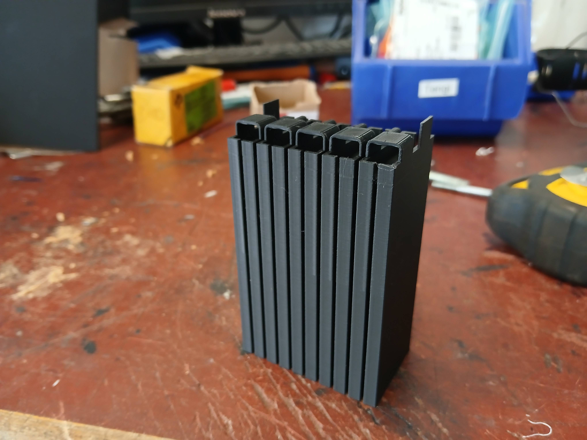
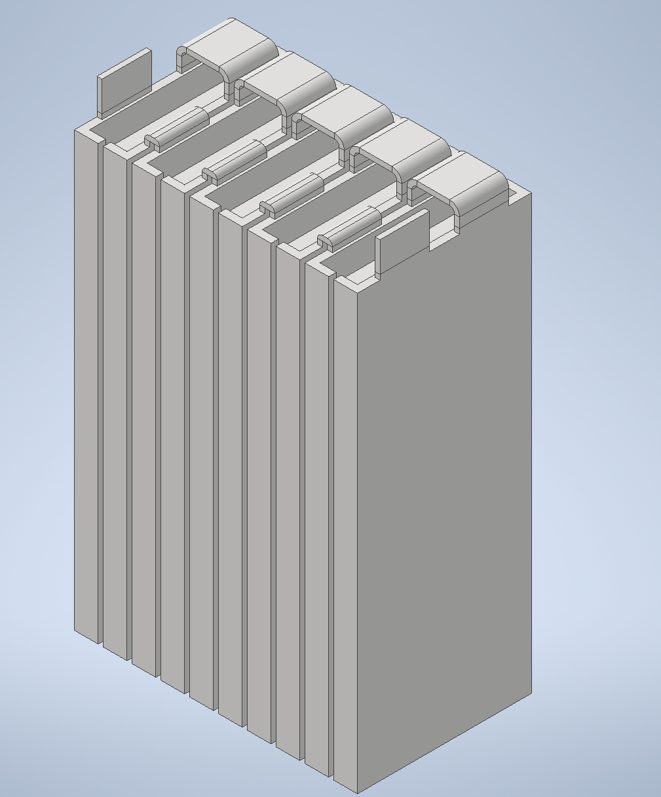
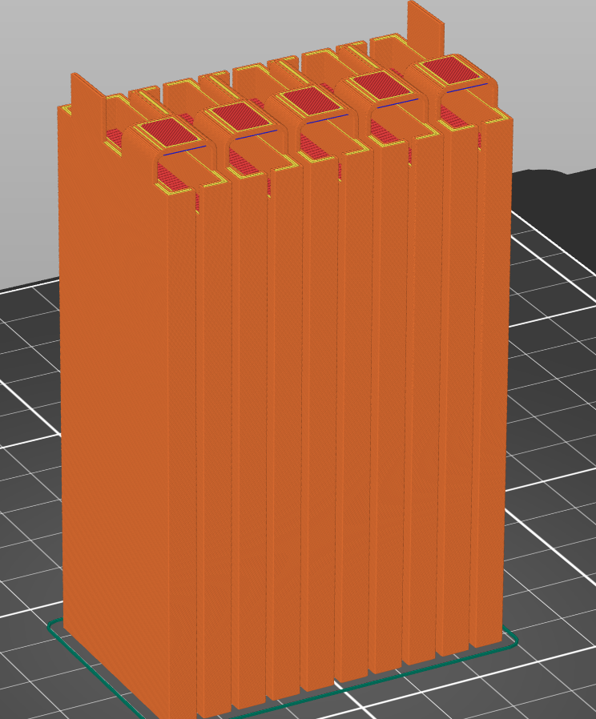
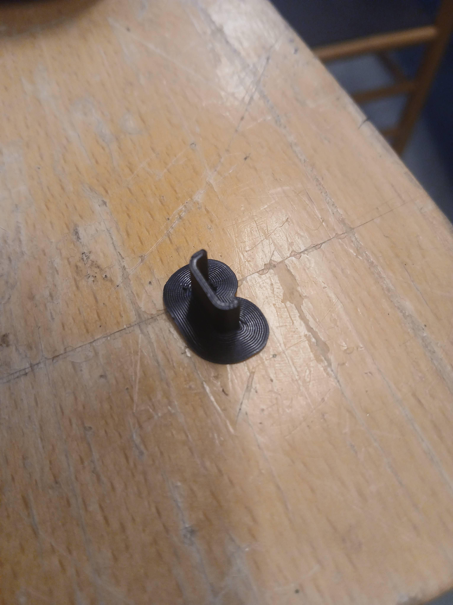
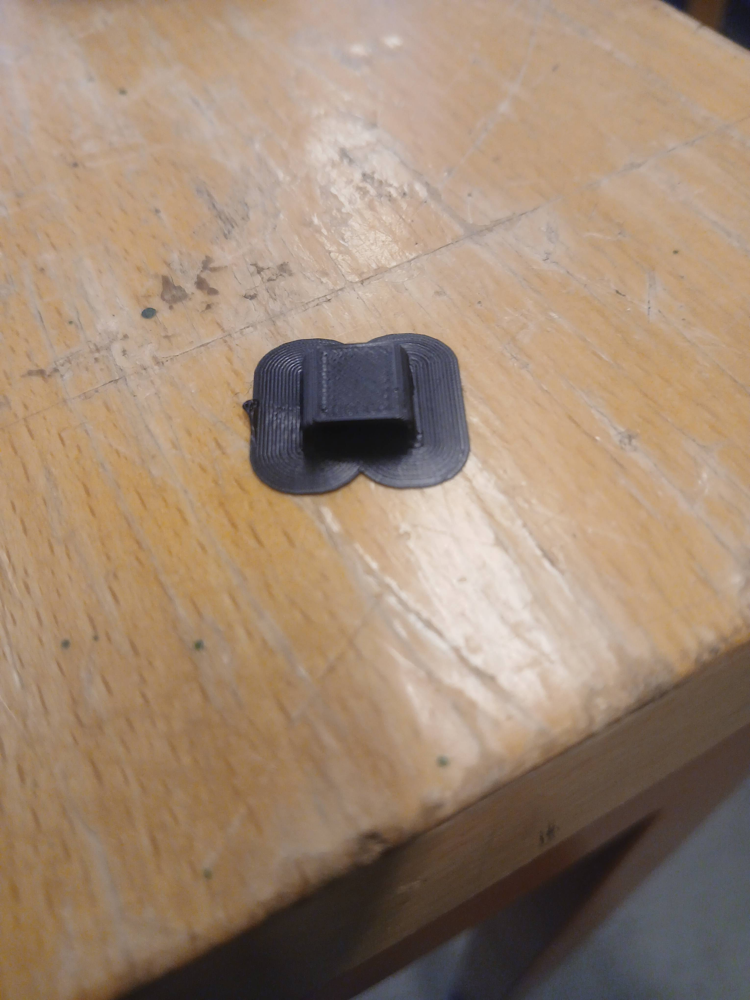

3D-prentað batterí segment

Það væri gaman að geta notað batteríbox-módelið til að sýna hvernig batteríin sjálf passa inn og hvernig boxið er hannað til að halda þeim öruggum ef árekstur skildi eiga sér stað. Til þess að gera þetta þá þurfum við að geta framleitt líkan af segmenti sem hægt væri að setja í og taka úr boxinu.
Batterípakkinn hefur 6 segment sem fara í 6 hólf batterípakkans. Hvert segment inniheldur 2 segment-blokkir og segment grind. Í þessu verkefni langar mig að 3D prenta segment blokk svo hægt sé að sýna hvernig batteríin eru bæði límd saman og raðtengd og 3D prentari er um það bil eina verkfærið sem leyfir okkur að gera þetta.


Á mynd má sjá einfaldaða útgáfu á hvernig blokk myndi líta út. Helsta áskorunin er tenging tabbana, eins og sést þá mynda þeir nokkurskonar brú sem gæti reynst erfitt fyrir prentaran að framkvæma þar sem hann getur ekki prentað í lausu lofti. Það er möguleiki að snúa blokkinni einhvernveginn öðruvísi við prentun en engin hlið gefur okkur minna prent í lausu lofti en þegar blokkin er upprétt. 3D prentarar geta að einhverju leiti skapað svona brýr, þær mega bar ekki vera of lagnar. Hérna er nokkuð einfalt fyrir okkur að taka eina svona brú og reyna að prenta hana og sjá hvernig það kemur út. Niðurstaðan úr því prófi var mjög góð og ákveðið var að setja blokkina sjálfa í prengun eftir það. Notað var 15% fyllingu í prentuninni og tók prógrammið tæplega 12 klst og notaði um 80g af efni.

